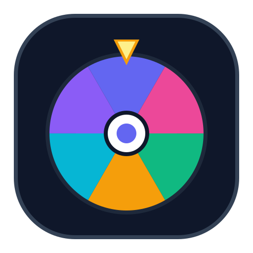
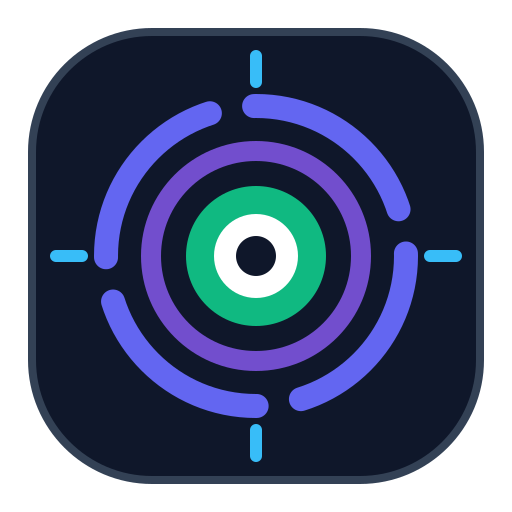
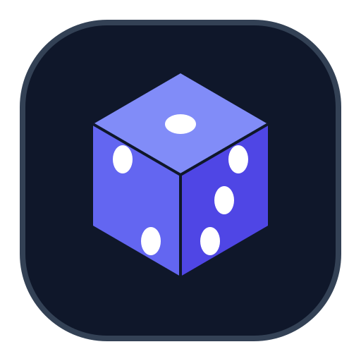

Никаких сложных градиентов и тяжелых эффектов — только строгая векторная геометрия, прямо отражающая суть Nanjicore (рулетка, кликер, рандомайзер). В код сайта ничего не подключено.
Тот самый полюбившийся вариант, очищенный от лишних теней: 6 ярких плоских секторов в фирменной палитре сайта, центральная кнопка-кликер и верхний янтарный указатель.

96×96 (HD)Две строгие геометрические стрелки бесконечного вращения (Spin / Reroll) в фирменных цветах Танджиро (индиго) и Дженны (изумруд) с белой центральной кнопкой.
Строгая геометрическая кнопка-мишень кликера с 4 швейцарскими маркерами и расходящейся волной импульса нажатия.

96×96 (HD)Изометрический плоский кубик шанса: 3 грани в оттенках индиго и фиолетового с контрастными белыми точками (1, 2, 3) — символ рандомайзера и непредсказуемости.

96×96 (HD)